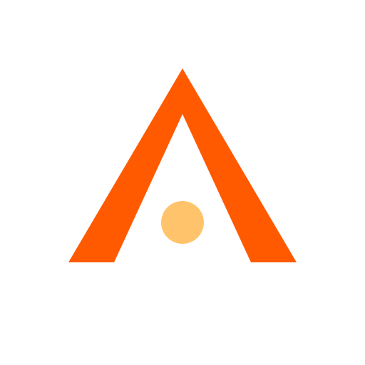
Nothing on this page was redrawn by eye. Every file is composed from the six numbers in
GEO inside apps/web/scripts/build-icons.mjs; sizes are transforms on that one
polygon, and the colours are parsed out of src/app/globals.css at build time. Regenerate the
whole set with npm run icons --workspace @crucible/web.
An anvil-horn chevron rising out of the slag with an ember suspended in its core. The polygon is a wedge, not a parallel stroke: thickest at the feet, drawing to a point at the apex. That taper is the horn.
favicon.svg and
icon.svg shared the chevron path exactly, but the plate corner radius was
0.219 of canvas in one and 0.1875 in the other, and the ember frame's inset was
4.7% versus 3.1%. Both files also painted the plate #0b0705 and the
chevron #ff7a1a — two colours that are not in the token set at all. The plate is now
--bg0, the chevron --ember, the ember --gold, and the radii
are one ratio read from one place.
cy 352 r 36, which hangs 20 units
below the feet line — so at 16px the dot and the base fused into one warm smear. Seating it
at cy 312 r 30 inside the notch keeps it a discrete core at 16px and at 32px.
Verified by rasterising four candidate positions at both sizes and looking.
Each cell is the real asset drawn at that many CSS pixels. SVGs are the vector; the .png
rows are the delivered rasters scaled by the browser, which is exactly what a launcher does to them.
Dark ground is --bg0, light ground is warm paper #e8e0d2. The tables below are
written by the build script from the files actually on disk.
| asset | 16 | 32 | 48 | 128 |
|---|---|---|---|---|
| crucible-mark.svgmaster mark · transparent | ||||
| crucible-mark-mono.svgtiny-size cut · ember dropped | ||||
| favicon.svgfull-bleed plate · no frame | ||||
| icon.svgbrand plate + ember frame | 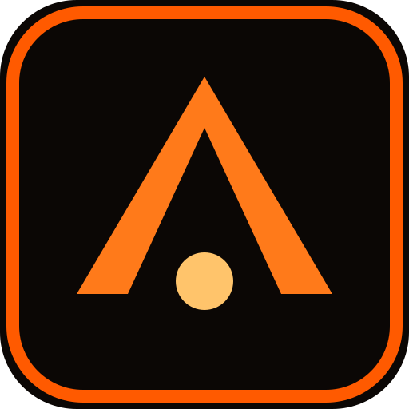 | |||
| icon-maskable.svgpurpose maskable · 60% safe zone | 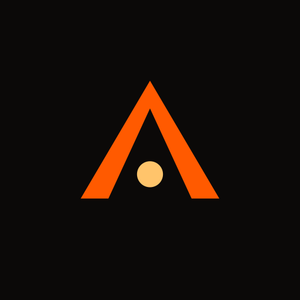 | |||
| apple-touch-icon.pngiOS ignores SVG favicons | 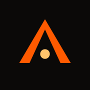 | |||
| icon-192.pngpurpose any | 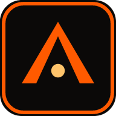 | |||
| icon-512.pngpurpose any | 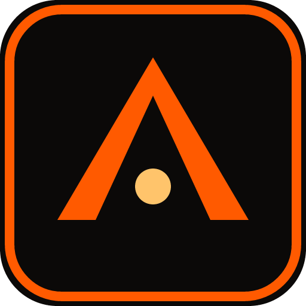 | |||
| icon-maskable-192.pngpurpose maskable | ||||
| icon-maskable-512.pngpurpose maskable | 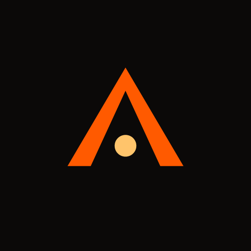 |
| asset | 16 | 32 | 48 | 128 |
|---|---|---|---|---|
| crucible-mark.svgmaster mark · transparent | ||||
| crucible-mark-mono.svgtiny-size cut · ember dropped | ||||
| favicon.svgfull-bleed plate · no frame | ||||
| icon.svgbrand plate + ember frame | ||||
| icon-maskable.svgpurpose maskable · 60% safe zone | ||||
| apple-touch-icon.pngiOS ignores SVG favicons | ||||
| icon-192.pngpurpose any | ||||
| icon-512.pngpurpose any | ||||
| icon-maskable-192.pngpurpose maskable | ||||
| icon-maskable-512.pngpurpose maskable |
▸ 512 is the only size where the brand frame and its 16-unit
stroke are both fully resolved. Below 48px the frame is sub-pixel mush, which is why it appears on
icon.svg and nowhere else.
These are not scaled-up vectors. Each is the file rasterised to that many real pixels and then blown up 10× with nearest-neighbour, so you are looking at the actual pixels a browser paints.
crucible-mark-mono.svg for hard tiny sizes: the ember is dropped, the arms go
1.31× thicker so each leg clears a whole pixel, and the stance widens with a shallower notch so
the two feet stay separate. All three are multipliers on the same GEO, not a redraw.
favicon.svg still carries the full mark, because an SVG favicon is rasterised at 32px on
every HiDPI desktop and the ember is unmistakable there. Where you must have a 16px raster,
use the mono.
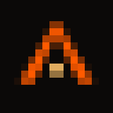
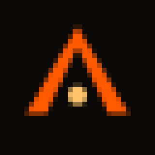
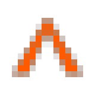
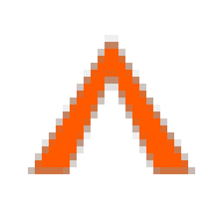
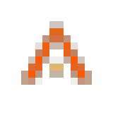
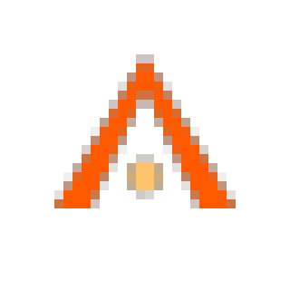
How it actually looks where it ships: a browser tab at 16px square, the same icon forced through a circular mask, and a phone home screen where the launcher crops the plate into a squircle or a circle.
The second tab is the same file with
border-radius:50% — SVG favicons get no mask treatment from the browser, so the plate is
a full-bleed square and the mark is scaled to 1.061× to sit inside the inscribed circle
(207.2u of 256u). The brand frame is deliberately absent: a square rule clipped by a circle reads as
damage.
Row 7 is the failure this set exists to
prevent: icon.svg through a circular crop loses its brand frame and half the plate.
That is what purpose: maskable is for — the platform crops it, so the mark is pulled to
0.739× and the charcoal bleeds to every edge.
Maskable means the platform crops the art, so the art must be drawn to survive the crop. Left is
icon.svg (purpose any), right is icon-maskable.svg (purpose
maskable) with the guaranteed-visible circles drawn over it.
icon.svg — the mark clears a 60% circle but the frame does not. Correct for any, wrong for masking.
icon-maskable.svg — mark radius 144.3u against a 153.6u budget, so it survives even the tightest 60% crop with slack.
og.png, 1200×630, rendered straight from an authored SVG — no HTML, no screenshot, no
browser in the loop. The wordmark is set in the real vendored Bricolage Grotesque TTF, fit to the text
column by measurement rather than by eye.
.wordmark rule asks for
font-weight 800. Bricolage Grotesque ships only as a variable TTF, and
resvg-js renders a variable font's default instance and ignores
font-weight — so a straight request gives Regular. Rather than swap in a generic bold,
the script forges the weight: a same-colour stroke laid under the fill
(paint-order: stroke) grows the outline outward by half its width, and the brand's tight
-0.035em tracking is then given that stroke back so the counters stay open. Without the
compensation the letters fuse.
Measured from the files on disk at build time — this table is rewritten by
build-icons.mjs on every run, so it cannot go stale.
| file | kind | dims | bytes | purpose / note |
|---|---|---|---|---|
| crucible-mark.svg | svg | 512 × 512 vb | 255 | master mark, transparent — the geometry everything else derives from |
| crucible-mark-mono.svg | svg | 512 × 512 vb | 234 | tiny-size cut — ember dropped, arms 1.31x, stance widened |
| favicon.svg | svg | 512 × 512 vb | 369 | full-bleed plate, mark at 1.061x, no frame: survives a square AND a circle |
| icon.svg | svg | 512 × 512 vb | 406 | the brand plate — rounded charcoal, ember frame, canonical mark |
| icon-maskable.svg | svg | 512 × 512 vb | 369 | purpose maskable — mark inside the 60% safe zone, bleed to all edges |
| icon-192.png | png | 192 × 192 | 5,586 | manifest purpose any — small launcher slot |
| icon-512.png | png | 512 × 512 | 16,744 | manifest purpose any — Play Store / A2HS hero |
| icon-maskable-192.png | png | 192 × 192 | 2,260 | manifest purpose maskable — cropped by the platform |
| icon-maskable-512.png | png | 512 × 512 | 7,374 | manifest purpose maskable — cropped by the platform |
| apple-touch-icon.png | png | 180 × 180 | 2,475 | apple-touch-icon — iOS wants a real PNG at 180 |
| og.png | png | 1200 × 630 | 62,982 | social card, rendered from an authored SVG — no browser, no screenshot |
| media/probe-favicon-16.png | png | 160 × 160 | 683 | PROOF ONLY — favicon rasterised at 16px, blown up x10 nearest-neighbour |
| media/probe-favicon-32.png | png | 320 × 320 | 1,860 | PROOF ONLY — favicon rasterised at 32px, blown up x10 nearest-neighbour |
| media/probe-mark-16.png | png | 160 × 160 | 547 | PROOF ONLY — mark rasterised at 16px, blown up x10 nearest-neighbour |
| media/probe-mark-32.png | png | 320 × 320 | 1,401 | PROOF ONLY — mark rasterised at 32px, blown up x10 nearest-neighbour |
| media/probe-mono-16.png | png | 160 × 160 | 604 | PROOF ONLY — mono rasterised at 16px, blown up x10 nearest-neighbour |
| media/probe-mono-32.png | png | 320 × 320 | 1,499 | PROOF ONLY — mono rasterised at 32px, blown up x10 nearest-neighbour |
| manifest.webmanifest | webmanifest | — | 992 | name/short_name, start_url /, display standalone, colours from globals.css, any + maskable icons |